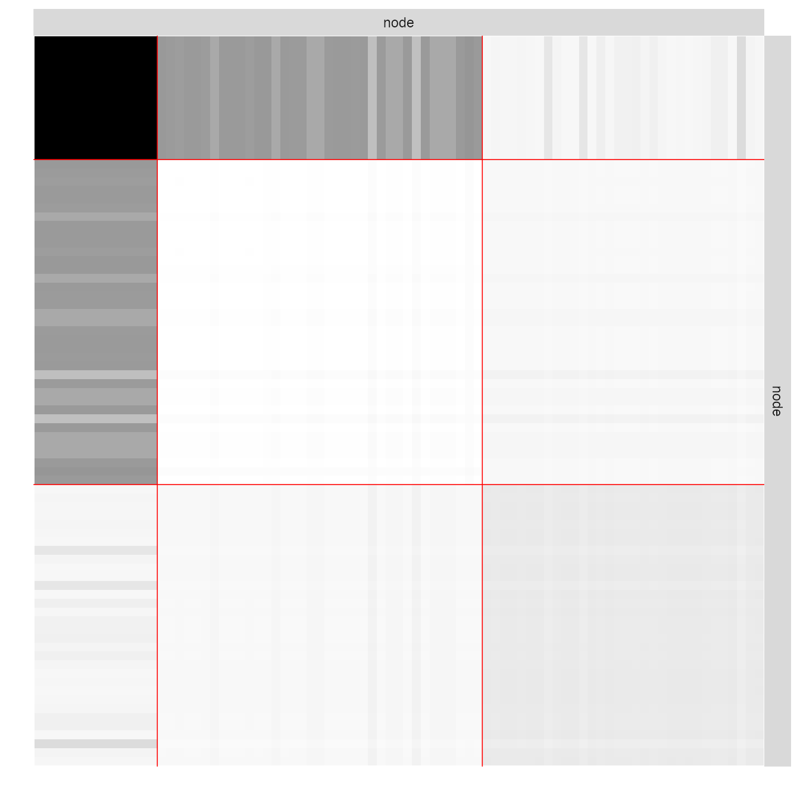
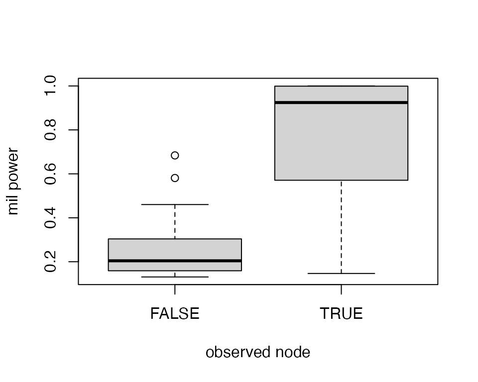
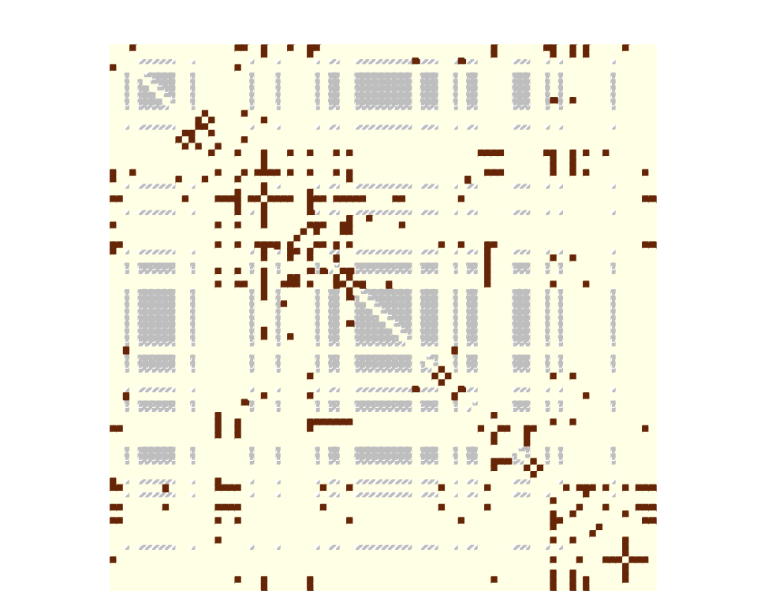
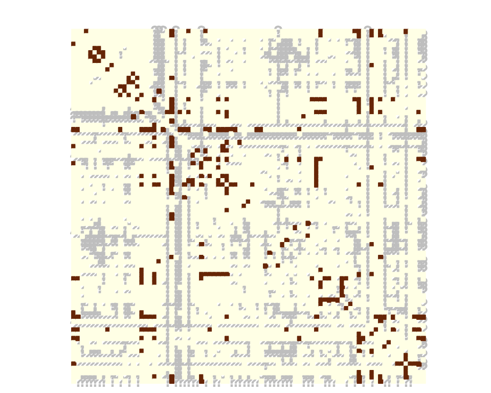

missSBM: a case study with war networks
missSBM team
Last update: 2021-05-22
Source:vignettes/case_study_war_networks.Rmd
case_study_war_networks.RmdPrerequisites
On top of missSBM, our analysis will rely on the igraph package for network data manipulation, and ggplot2 and magrittr for representation.
The war network
The war data set comes with the missSBM package:
data("war")This data set contains a list of two networks (belligerent and alliance) where the nodes are countries; an edge in the network belligerent means that the two countries have been at war at least once between years 1816 to 2007; an edge in network alliance means that the two countries have had a formal alliance between years 1816 and 2012. The network belligerent have less nodes since countries which have not been at war at all are not considered.
These two networks were extracted from https://www.correlatesofwar.org/ (see Sarkees and Wayman (2010) for war data, and Gibler (2008) for formal alliance). Version 4.0 was used for war data and version 4.1 for formal alliance. On the top of the two networks, two covariates were considered. One covariate is concerned with military power of the states (see Singer, Bremer, and Stuckey (1972), version 5.0 was used) and the other is concerned with trade exchanges between country (see Barbieri, Keshk, and Pollins (2016) and Barbieri, Keshk, and Pollins (2009), version 4.0 was used). In the following, we focus on the network war$belligerent, which is provided as an igraph object:
par(mar = c(0,0,0,0))
plot(war$belligerent,
vertex.shape="none", vertex.label=V(war$belligerent)$name,
vertex.label.color = "steel blue", vertex.label.font=1.5,
vertex.label.cex=.6, edge.color="gray70", edge.width = 2)
To pursue our analysis, we extract the adjacency matrix of the network, a covariate on the vertices describing the military power of each country, and a covariate on the dyads describing the intensity of trade between two countries.
belligerent_adjacency <- as_adj(war$belligerent, sparse = FALSE)
belligerent_power <- war$belligerent$power
belligerent_trade <- war$belligerent$tradeGenerating missing data
Even though the dataset was complete, we can assume that some data may be missing for the sake of illustration.
More specifically, the data collection may be missing for some countries in the sense that data were collected comprehensively for a subset of countries and for the other countries we only observe their edges with the first subset and not within them. Thus, the sampling is node-centered and collects edges information accordingly (there will be a block of missing data on the diagonal of the adjacency matrix). To this end we rely on the function observeNetwork in missSBM:
partlyObservedNet_war <- missSBM::observeNetwork(belligerent_adjacency, sampling = "node", parameters = .8)
corrplot(partlyObservedNet_war,
is.corr = FALSE,
tl.pos = "n",
method = "color",
cl.pos = "n",
na.label.col = "grey",
mar = c(0,0,1,0)
)
Estimation with missing data
We can now adjust a Stochastic Block Model with the function estimateMissSBM under this type of sampling: by default, we use a forward/backward (split and merge) strategy on the clustering to avoid local minimal and get a robust Integrated Classification Likelihood Criterion, commonly used to perform model selection. This will make the choice of the number of group/block more robust. The exploration type (forward, backward, both or none, and number of iteration can be tuned via the control argument).
vBlocks <- 1:5
collection_sbm <- estimateMissSBM(partlyObservedNet_war, vBlocks, sampling = "node")Estimation on fully observed network
We would like to compare our results with the clustering obtained on the fully observed network. To this end, we adjust a collection of SBM on the original adjacency matrix:
collection_sbm_full <-
estimateMissSBM(belligerent_adjacency, vBlocks, sampling = "node", control = list(iterates = 2))As expected, the ICL on the fully observed network is better. But more interestingly, the number of groups selected may differ in the the presence of missing data.
rbind(
data.frame(ICL = collection_sbm_full$ICL, nbBlocks = vBlocks, type = "full"),
data.frame(ICL = collection_sbm$ICL, nbBlocks = vBlocks, type = "missing")
) %>%
ggplot(aes(x = nbBlocks, y = ICL, group = type, color = type)) +
labs(title = "Model selection", x = "#blocks", y = "Integrated Classification Likelihood") +
geom_line() + theme_bw()
Indeed, two classes found on the fully observed network fuse in the SBM fitted on the partially observed network.
table(
collection_sbm$bestModel$fittedSBM$memberships,
collection_sbm_full$bestModel$fittedSBM$memberships
)##
## 1 2 3
## 1 9 8 1
## 2 0 2 63The model finally fitted on the network data can be represented thanks to a plot method applying on objects with class SBM:
plot(collection_sbm_full$bestModel, type = "expected")
Taking covariates into account
This part shows how to account for covariates in the model.
Military power
We first consider a covariate reflecting the military power of the country, hence associated to the nodes. We typically expect a part of the network to be explained by this covariate. We run the inference on the fully observed network:
vBlocks <- 1:3
collection_sbm_power_full <- estimateMissSBM(belligerent_adjacency, vBlocks = vBlocks, sampling = "node", covariates = list(belligerent_power)) Note that by default, the distribution of edges depends on the covariate(s) in any are included in the model.
The covariate provided as a vector is transferred on edges through an \(\ell_1\) similarity: for edge \((i,j)\) the associated covariate is defined by \(|x_i-x_j|\) where \(x_i\) denotes the covariate for node \(i\). Another similarity measure could be provided via the option similarity.
The estimated effect of the covariate is obtained through
collection_sbm_power_full$bestModel$fittedSBM$covarParam## [1] -5.390419The covariate could be responsible for the sampling. The state with bigger military power are more likely to be fully observed than the others. We will simulate this sampling. An intercept is considered by default in the sampling model.
nWar <- nrow(belligerent_adjacency)
parameters_sample <- 600
sampleNet_power_miss <- missSBM::observeNetwork(
belligerent_adjacency,
sampling = "covar-node",
parameters = parameters_sample, covariates = list(belligerent_power), intercept = -2
)
observedNodes <- !is.na(rowSums(sampleNet_power_miss))
boxplot(1/(1 + exp(-cbind(1,belligerent_power) %*% c(-2, parameters_sample))) ~ observedNodes, ylab="mil power",xlab = "observed node")
corrplot(sampleNet_power_miss,
is.corr = FALSE,
tl.pos = "n",
method = "color",
cl.pos = "n",
na.label.col = "grey",
mar = c(0,0,1,0)
)
Then, we can estimate the model by setting the sampling to be covar-node. We can still choose whether to consider or not the covariate in the SBM.
collection_sbm_power_miss <- estimateMissSBM(sampleNet_power_miss, vBlocks = vBlocks, sampling = "covar-node", covariates = list(belligerent_power))Then we can access the estimated sampling parameters:
collection_sbm_power_miss$bestModel$fittedSampling$parameters## [1] -1.828407 468.983214and the parameters in the SBM associated with the covariate:
collection_sbm_power_miss$bestModel$fittedSBM$covarParam## [1] -5.128964Trade data
Another covariate is the average trade exchange between the states. This covariate is related to pairs of states hence to the dyads. We first build a matrix of dissimilarity according to this covariate:
trade <- belligerent_trade
trade[is.na(trade)] <- 0
trade <- trade + t(trade)
trade <- log(trade + 1)
diag(trade) = 0We then conduct a similar analysis as with the power to see how it can be accounted for in the SBM.
We first sample according to it:
parameters_sample <- 1
sampleNet_trade_miss <- missSBM::observeNetwork(belligerent_adjacency, sampling = "covar-dyad", parameters = parameters_sample, covariates = list(trade), intercept = -2)
corrplot(sampleNet_trade_miss,
is.corr = FALSE,
tl.pos = "n",
method = "color",
cl.pos = "n",
na.label.col = "grey",
mar = c(0,0,1,0)
)
The choice of the sampling parameters leads to more likely observe dyads with important trade exchange. We then perform estimation on the missing data drawn according to the trade covariate.
collection_sbm_trade_miss <- estimateMissSBM(sampleNet_trade_miss, vBlocks = vBlocks, sampling = "covar-dyad", covariates = list(trade))##
##
## Adjusting Variational EM for Stochastic Block Model
##
## Imputation assumes a 'covar-dyad' network-sampling process
##
## Initialization of 3 model(s).
## Performing VEM inference
##
## Looking for better solutions
## Pass 1 Going forward ++
Pass 1 Going backward ++
collection_sbm_trade_miss$bestModel$fittedSampling$parameters## [1] -2.024621 1.039299
collection_sbm_trade_miss$bestModel$fittedSBM$covarParam## [1] 0.1685794References
Barbieri, Katherine, Omar MG Keshk, and Brian M Pollins. 2009. “Trading Data: Evaluating Our Assumptions and Coding Rules.” Conflict Management and Peace Science 26 (5): 471–91.
Barbieri, Katherine, Omar Keshk, and Brian Pollins. 2016. “Correlates of War Project Trade Data Set Codebook, Version 4.0.” Online: Http://Correlatesofwar. Org.
Gibler, Douglas M. 2008. International Military Alliances, 1648-2008. CQ Press.
Sarkees, Meredith Reid, and Frank Whelon Wayman. 2010. Resort to War: A Data Guide to Inter-State, Extra-State, Intra-State, and Non-State Wars, 1816-2007. Cq Pr.
Singer, J David, Stuart Bremer, and John Stuckey. 1972. “Capability Distribution, Uncertainty, and Major Power War, 1820-1965.” Peace, War, and Numbers 19: 48.